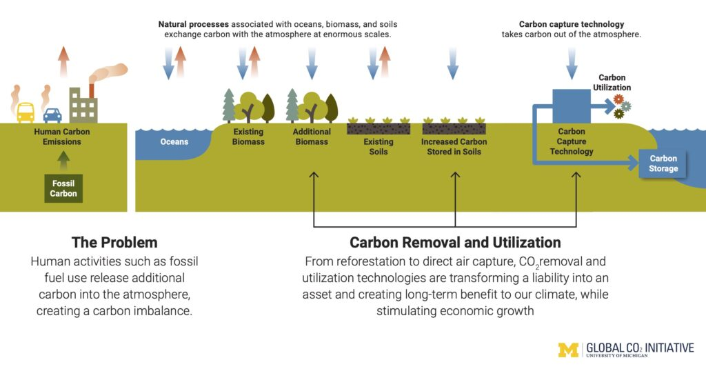

About Us
Michigan Carbon Capture is a University of Michigan student organization dedicated to innovation and education in carbon capture technology.As the student branch of the Global CO2 Initiative, we coordinate both research initiatives to develop novel carbon capture technology and educational initiatives to advance climate tech understanding in the Ann Arbor community. Together, we're building a sustainable future.
We strive to create leaders on campus who will impact industry, government, and academia through their accomplishments during and after their college experience. Above all, we hope they can enhance the global perception of carbon removal as a promising climate solution through their advocacy and responsibility to sustainable action.

Our Leadership
Co-Presidents: Daniel Johnson, Brendan Coffman
Vice President: Shaunak Sharma
SAPPHIRE Leads: Min Hollweck, Reid Zupanc
CERULEAN Leads: Shaunak Sharma, Emmeline Meldrum
AZURE Lead: Bhavya Yaddanapudi